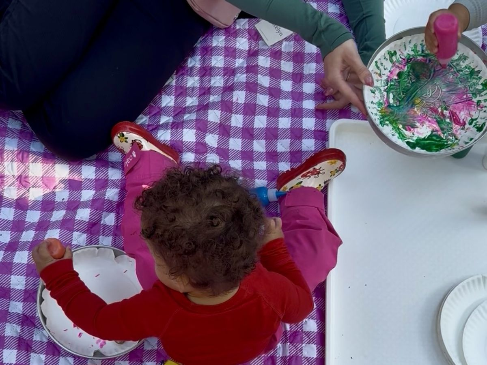

Our Approach
The thinking behind the play.
Little Roots is inspired by the forest school tradition, but we don’t follow a single method. We blend four educational philosophies, Reggio Emilia, Montessori, Waldorf, and Charlotte Mason, into something built for toddlers and the Pacific Northwest forest.
When most people hear “forest school,” they picture older kids building shelters and whittling sticks. Ours looks different because our learners are still figuring out what happens when they step in a puddle on purpose.
Underneath all four philosophies is the same idea. The environment is the teacher, children lead, and we trust the process. (You can read how Little Roots got started on our About page.)
What Guides Us
From Reggio Emilia: The Environment as Teacher
This is our biggest influence. We plan every week, but we plan from what we saw the week before. When the kids couldn’t stop sending things rolling and splatting, we built a whole morning around it. When they kept going back to scooping, we added more rice and dry pouring stations. The children show us what they’re ready for by what they reach for.
From Montessori: Independence and Real Work
We set things up so kids can do real work themselves, at their own pace. Nobody rushes them and nobody does it for them.
We also borrow a lot of how we talk to children from Montessori. We see toddlers as capable learners, so we get down to their level, offer simple choices, and describe what we see instead of saying “good job,” like “You carried that whole bucket by yourself.” We tell them what to do instead of what not to do, and we give them time to try before we step in.
From Waldorf: Rhythm and Wonder
Every Wednesday follows the same rhythm: arrival, opening circle, stations, snack, morning gathering, nature walk, and closing circle. Some things are out every single week, like the book and instrument blanket, the pebblestones, and a water painting spot on a fallen log. Toddlers settle when they know what comes next. We lean on songs, stories, and real materials instead of flashcards or worksheets.
From Charlotte Mason: Nature as the First Teacher
Charlotte Mason believed young children learn best from real things, like watching a real bird or standing in the rain. Our nature walks are where this lives. Each week we ask one guiding question at the start, like “What is falling?” or “Who lives under here?” and then we let it sit. We go slow, pass out hand lenses, and say out loud what we notice. “I notice that mushroom is growing on the log. I wonder why.” Noticing out loud is the same habit scientists use, watching for patterns and how things change over time.

“It’s a good blend of structure and freedom for the kiddos.”
At the Stations
Most of the morning happens at the stations. Each week we set up six to eight of them, and children move freely between them. They change with the season and the week’s theme.


What Is Process Art?
Process art means the focus is on making, not on a finished product that looks a certain way. There’s no model to copy, no right way to do it, and no adult hovering to make sure the tree looks like a tree. Your child might paint with a pinecone, smear mud across paper, or tear and layer leaves into a collage. Every choice is theirs.
It builds fine motor skills, hand-eye coordination, decision-making, and creative confidence.

What They’re Really Learning
Parents sometimes wonder what a two-year-old is getting from all this.
Scooping mud into a cup is fine motor work. Balancing on a pebblestone is gross motor and spatial awareness. Sitting in circle for a story builds language and connection. Choosing which station to visit next is early decision-making, and watching a friend try something and then trying it too is how toddlers learn from each other. When they come back to the same station week after week and do something new, that’s persistence.
“We love our Forest School and all the work Mattison Williams does. Watching [our son] grow and make friends has been wonderful.”